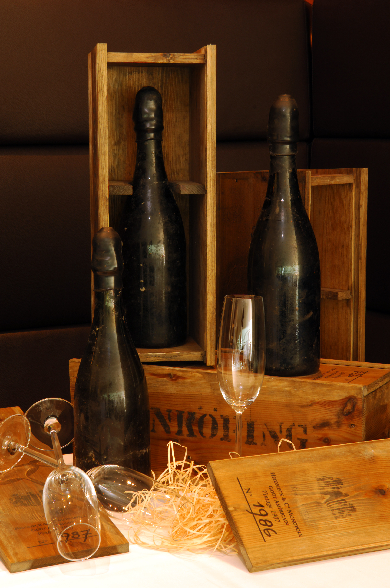
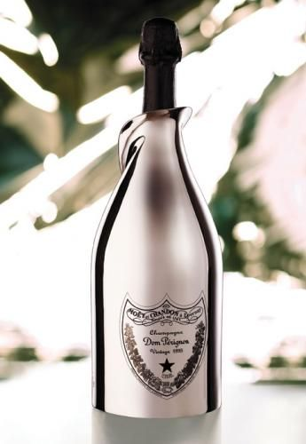

Learn more about each variety
 Goût de Diamants
Goût de Diamants
Disponible depuis seulement 2013, la bouteille Goût de Diamants cible « les clients les plus prestigieux » de la planète. Ornée d’un diamant blanc 19 carats sur une étiquette en or blanc 18 carats, chaque propriétaire de la bouteille verra son nom gravé sur la bouteille.
 Heidsieck 1907
Légendaire, ce Champagne est tout bonnement le plus cher du monde. Outre son goût délicieux, son histoire en elle-même le rend extrêmement précieux. En 1916, la maison Heidsieck&Co Monopole envoie par bateau 200 bouteilles de son millésime 1907 à la famille impériale de Russie. Hélas, le navire fait naufrage avant d’arriver à bon port, et sa précieuse cargaison coule au fond de l’océan. Elle ne sera retrouvée que près d’un siècle plus tard, en 1997 pour être exact. Les 200 bouteilles ont donc passé tout ce temps dans les abysses, et sont désormais détenues par le Ritz-Carlton de Moscou qui les propose à ses client pour 45 000$ la coupe et 270 000$ par bouteille.
 Dom Perignon White Gold Jeroboam
Réputé partout dans le monde, Dom Perignon présente avec ce White Gold Jeroboam son véritable chef d’oeuvre, classé comme un vin pétillant. Sa bouteille est si élégante que n’importe que n’importe quel regard se posant dessus tombe littéralement amoureux.